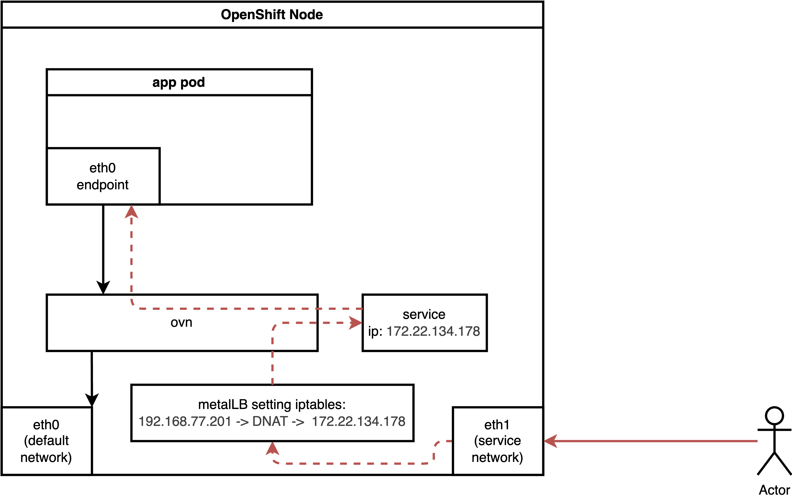
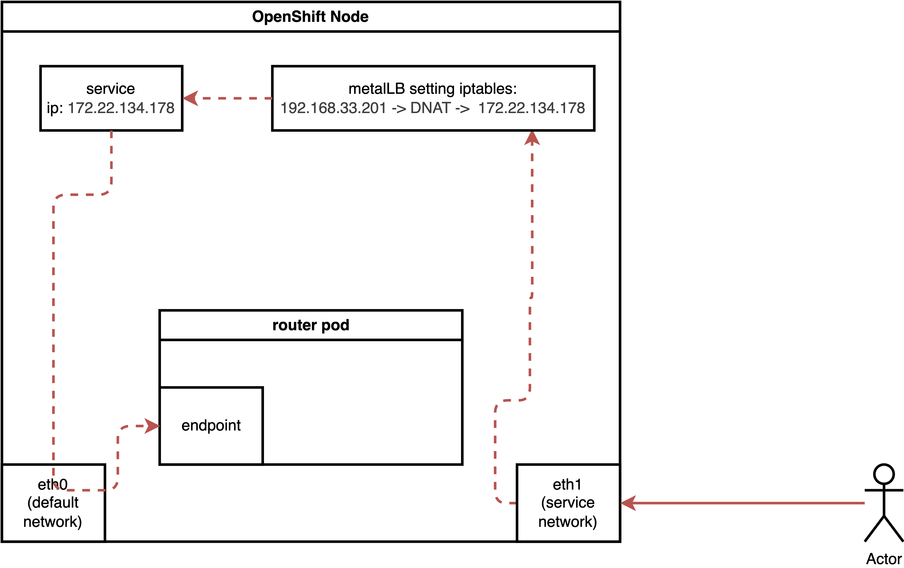
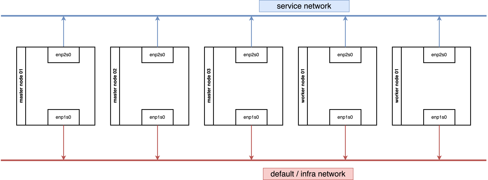
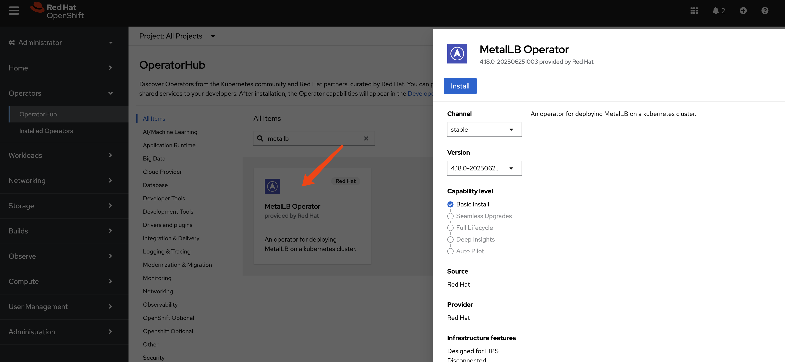
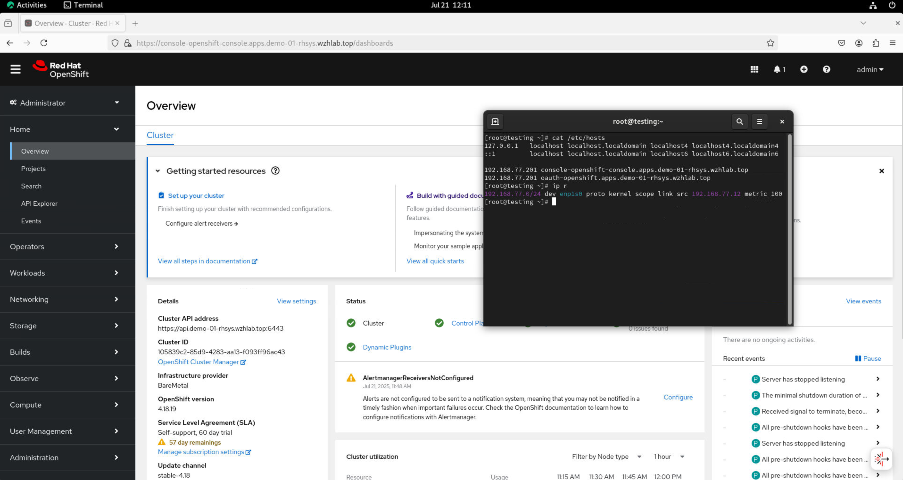

[!NOTE] This document will be updated periodically.
Using MetalLB to Expose Services on a Second NIC
Refer to the official documentation for MetalLB to expose services on a second network.
For a second NIC with a normal pod, the ingress traffic flow is as follows:

For a pod running with host network, the ingress traffic flow is as follows:

Our demo environment, consisting of 3 master nodes and 2 worker nodes, works as expected. If you encounter issues in your environment, verify the underlying network security configuration, such as MAC spoofing denial settings.
We tested a configuration where both 3 master nodes and 2 worker nodes are connected to two networks.

We also tested a configuration where 3 master nodes are connected to one network, and 2 worker nodes are connected to two networks.
Both network architectures work.
Enable IP Forward for Nodes
While it is preferable to limit IP forwarding to specific NICs, for simplicity, we will enable it for all NICs.
oc patch network.operator cluster -p '{"spec":{"defaultNetwork":{"ovnKubernetesConfig":
{"gatewayConfig":{"ipForwarding": "Global"}}}}}' --type=mergeIf you wish to limit forwarding to a specific NIC, refer to the official documentation.
Install MetalLB

Create a single instance of a MetalLB custom resource:
apiVersion: metallb.io/v1beta1
kind: MetalLB
metadata:
name: metallb
namespace: metallb-systemConfigure IP Address Pool
apiVersion: metallb.io/v1beta1
kind: IPAddressPool
metadata:
namespace: metallb-system
name: hcp-pool
spec:
addresses:
- 192.168.77.200-192.168.77.220
autoAssign: true
avoidBuggyIPs: trueConfigure L2 Advertisements
Initially, we planned to manually select nodes and NICs for IP broadcasting. However, testing revealed that MetalLB can automatically select the appropriate nodes and NICs, simplifying the configuration to node selection only.
oc label node worker-01-demo network-zone=enp2s0
oc label node worker-02-demo network-zone=enp2s0By defining the L2 advertisement on the worker node, all ingress traffic will initially reach a worker node and then be redirected to its final destination.
apiVersion: metallb.io/v1beta1
kind: L2Advertisement
metadata:
name: l2-advertisement
namespace: metallb-system
spec:
ipAddressPools:
- hcp-pool
nodeSelectors:
- matchLabels:
network-zone: enp2s0
# interfaces:
# - enp2s0Expose Kube-API
Let’s expose a service. Exposing a normal pod connected to the default OVN network is straightforward and covered in the official documentation.
Therefore, we will focus on exposing special services, such as the Kube-API, which listen on 0.0.0.0. The process for exposing these services is surprisingly simple.
It turns out to be very easy.
oc get pods -n openshift-kube-apiserver -l app=openshift-kube-apiserver,apiserver="true"
# NAME READY STATUS RESTARTS AGE
# kube-apiserver-master-01-demo 5/5 Running 0 3h22m
# kube-apiserver-master-02-demo 5/5 Running 0 3h19m
# kube-apiserver-master-03-demo 5/5 Running 0 3h16m
cat << EOF > ${BASE_DIR}/data/install/metallb-kube-api.yaml
apiVersion: v1
kind: Service
metadata:
name: kube-api-secondary-lb
namespace: openshift-kube-apiserver
annotations:
# This annotation is essential.
# Replace 'your-eth1-pool-name' with the name of your IPAddressPool for eth1.
# metallb.universe.tf/ip-address-pool: hcp-pool
metallb.io/ip-address-pool: hcp-pool
spec:
# This requests an IP from MetalLB
type: LoadBalancer
# externalTrafficPolicy: Local
selector:
# 👇 Use the labels you found in the previous step
app: openshift-kube-apiserver
apiserver: "true"
ports:
- name: https
protocol: TCP
port: 6443
targetPort: 6443
EOF
oc apply -f ${BASE_DIR}/data/install/metallb-kube-api.yaml
oc get svc kube-api-secondary-lb -n openshift-kube-apiserver
# NAME TYPE CLUSTER-IP EXTERNAL-IP PORT(S) AGE
# kube-api-secondary-lb LoadBalancer 172.22.78.172 192.168.77.200 6443:31135/TCP 1s
oc describe ep kube-api-secondary-lb -n openshift-kube-apiserver
# Name: kube-api-secondary-lb
# Namespace: openshift-kube-apiserver
# Labels: <none>
# Annotations: endpoints.kubernetes.io/last-change-trigger-time: 2025-07-18T13:40:17Z
# Subsets:
# Addresses: 192.168.99.23,192.168.99.24,192.168.99.25
# NotReadyAddresses: <none>
# Ports:
# Name Port Protocol
# ---- ---- --------
# https 6443 TCP
# Events: <none>Testing
We have a kube-api endpoint, we can use it to test the API server.
oc login --insecure-skip-tls-verify=true https://192.168.77.200:6443 -u admin -p redhat
# WARNING: Using insecure TLS client config. Setting this option is not supported!
# Login successful.
# You have access to 90 projects, the list has been suppressed. You can list all projects with 'oc projects'
# Using project "default".
# Welcome! See 'oc help' to get started.
oc get node
# NAME STATUS ROLES AGE VERSION
# master-01-demo Ready control-plane,master,worker 27h v1.31.9
# master-02-demo Ready control-plane,master,worker 27h v1.31.9
# master-03-demo Ready control-plane,master,worker 27h v1.31.9Expose Router
Next, we will expose another special service: the router/HAProxy service. This service hosts the admin console and handles cluster ingress traffic, and it also listens on 0.0.0.0.
This also proves to be very easy.
oc get pods,svc -n openshift-ingress -l ingresscontroller.operator.openshift.io/deployment-ingresscontroller=default
# NAME READY STATUS RESTARTS AGE
# pod/router-default-96f5d5446-7q9nq 1/1 Running 0 8h
# pod/router-default-96f5d5446-sm56b 1/1 Running 0 8h
cat << EOF > ${BASE_DIR}/data/install/metallb-router.yaml
apiVersion: v1
kind: Service
metadata:
# The name must be 'router-default' if you're targeting the default ingresscontroller
name: router-default
namespace: openshift-ingress
annotations:
# This annotation is essential.
# Replace 'your-eth1-pool-name' with the name of your IPAddressPool for eth1.
# metallb.universe.tf/ip-address-pool: hcp-pool
metallb.io/ip-address-pool: hcp-pool
spec:
# This requests a virtual IP from MetalLB
type: LoadBalancer
# externalTrafficPolicy: Local
selector:
# This selector targets the default router pods
ingresscontroller.operator.openshift.io/deployment-ingresscontroller: default
ports:
- name: http
port: 80
protocol: TCP
targetPort: 80
- name: https
port: 443
protocol: TCP
targetPort: 443
EOF
oc apply -f ${BASE_DIR}/data/install/metallb-router.yaml
oc get svc router-default -n openshift-ingress
# NAME TYPE CLUSTER-IP EXTERNAL-IP PORT(S) AGE
# router-default LoadBalancer 172.22.101.96 192.168.77.201 80:30390/TCP,443:32397/TCP 5s
oc describe ep router-default -n openshift-ingress
# Name: router-default
# Namespace: openshift-ingress
# Labels: <none>
# Annotations: endpoints.kubernetes.io/last-change-trigger-time: 2025-07-18T13:51:30Z
# Subsets:
# Addresses: 192.168.99.26,192.168.99.27
# NotReadyAddresses: <none>
# Ports:
# Name Port Protocol
# ---- ---- --------
# https 443 TCP
# http 80 TCP
# Events: <none>Testing
Change the content of /etc/hosts and use a
browser to access the console and OAuth.
192.168.77.201 console-openshift-console.apps.demo-01-rhsys.wzhlab.top
192.168.77.201 oauth-openshift.apps.demo-01-rhsys.wzhlab.topon worker node.
curl -v --insecure --resolve console-openshift-console.apps.demo-01-rhsys.wzhlab.top:443:192.168.77.201 https://console-openshift-console.apps.demo-01-rhsys.wzhlab.topOn the testing node’s console, you can open a browser and
access the console. Additionally, you can examine the host and
IP route settings to confirm that traffic is confined to the
192.168.77.* network segment.

Firewall Rules
We can expose special services, but understanding why it works requires exploring the underlying traffic path.
Ingress traffic will first encounter an iptables NAT rule, which redirects it via DNAT to the service IP. The traffic then enters the OVN network, where another DNAT rule (within the OVN network/kmod) directs it to the actual endpoint.
On a worker node.
# on a worker node
iptables -L -v -n
# Chain INPUT (policy ACCEPT 65745 packets, 74M bytes)
# pkts bytes target prot opt in out source destination
# 65745 74M KUBE-FIREWALL 0 -- * * 0.0.0.0/0 0.0.0.0/0
# Chain FORWARD (policy ACCEPT 0 packets, 0 bytes)
# pkts bytes target prot opt in out source destination
# 0 0 REJECT 6 -- * * 0.0.0.0/0 0.0.0.0/0 tcp dpt:22624 flags:0x17/0x02 reject-with icmp-port-unreachable
# 0 0 REJECT 6 -- * * 0.0.0.0/0 0.0.0.0/0 tcp dpt:22623 flags:0x17/0x02 reject-with icmp-port-unreachable
# Chain OUTPUT (policy ACCEPT 67796 packets, 30M bytes)
# pkts bytes target prot opt in out source destination
# 0 0 REJECT 6 -- * * 0.0.0.0/0 0.0.0.0/0 tcp dpt:22624 flags:0x17/0x02 reject-with icmp-port-unreachable
# 0 0 REJECT 6 -- * * 0.0.0.0/0 0.0.0.0/0 tcp dpt:22623 flags:0x17/0x02 reject-with icmp-port-unreachable
# 67796 30M KUBE-FIREWALL 0 -- * * 0.0.0.0/0 0.0.0.0/0
# Chain KUBE-FIREWALL (2 references)
# pkts bytes target prot opt in out source destination
# 0 0 DROP 0 -- * * !127.0.0.0/8 127.0.0.0/8 /* block incoming localnet connections */ ! ctstate RELATED,ESTABLISHED,DNAT
# Chain KUBE-KUBELET-CANARY (0 references)
# pkts bytes target prot opt in out source destination
iptables -L -v -n -t nat
# Chain PREROUTING (policy ACCEPT 58 packets, 12686 bytes)
# pkts bytes target prot opt in out source destination
# 57 11186 OVN-KUBE-ETP 0 -- * * 0.0.0.0/0 0.0.0.0/0
# 58 12686 OVN-KUBE-EXTERNALIP 0 -- * * 0.0.0.0/0 0.0.0.0/0
# 58 12686 OVN-KUBE-NODEPORT 0 -- * * 0.0.0.0/0 0.0.0.0/0
# Chain INPUT (policy ACCEPT 0 packets, 0 bytes)
# pkts bytes target prot opt in out source destination
# Chain OUTPUT (policy ACCEPT 3578 packets, 216K bytes)
# pkts bytes target prot opt in out source destination
# 3578 216K OVN-KUBE-EXTERNALIP 0 -- * * 0.0.0.0/0 0.0.0.0/0
# 3578 216K OVN-KUBE-NODEPORT 0 -- * * 0.0.0.0/0 0.0.0.0/0
# 3578 216K OVN-KUBE-ITP 0 -- * * 0.0.0.0/0 0.0.0.0/0
# Chain POSTROUTING (policy ACCEPT 3568 packets, 215K bytes)
# pkts bytes target prot opt in out source destination
# 3568 215K OVN-KUBE-EGRESS-IP-MULTI-NIC 0 -- * * 0.0.0.0/0 0.0.0.0/0
# Chain KUBE-KUBELET-CANARY (0 references)
# pkts bytes target prot opt in out source destination
# Chain OVN-KUBE-EGRESS-IP-MULTI-NIC (1 references)
# pkts bytes target prot opt in out source destination
# Chain OVN-KUBE-ETP (1 references)
# pkts bytes target prot opt in out source destination
# Chain OVN-KUBE-EXTERNALIP (2 references)
# pkts bytes target prot opt in out source destination
# 0 0 DNAT 6 -- * * 0.0.0.0/0 192.168.77.201 tcp dpt:443 to:172.22.119.141:443
# 0 0 DNAT 6 -- * * 0.0.0.0/0 192.168.77.201 tcp dpt:80 to:172.22.119.141:80
# 0 0 DNAT 6 -- * * 0.0.0.0/0 192.168.77.200 tcp dpt:6443 to:172.22.108.83:6443
# Chain OVN-KUBE-ITP (1 references)
# pkts bytes target prot opt in out source destination
# Chain OVN-KUBE-NODEPORT (2 references)
# pkts bytes target prot opt in out source destination
# 0 0 DNAT 6 -- * * 0.0.0.0/0 0.0.0.0/0 ADDRTYPE match dst-type LOCAL tcp dpt:31084 to:172.22.119.141:443
# 0 0 DNAT 6 -- * * 0.0.0.0/0 0.0.0.0/0 ADDRTYPE match dst-type LOCAL tcp dpt:30847 to:172.22.119.141:80
# 0 0 DNAT 6 -- * * 0.0.0.0/0 0.0.0.0/0 ADDRTYPE match dst-type LOCAL tcp dpt:32603 to:172.22.108.83:6443On a Master Node
# on a master node
iptables -L -v -n
# Chain INPUT (policy ACCEPT 579K packets, 482M bytes)
# pkts bytes target prot opt in out source destination
# 579K 482M KUBE-FIREWALL 0 -- * * 0.0.0.0/0 0.0.0.0/0
# Chain FORWARD (policy ACCEPT 5 packets, 200 bytes)
# pkts bytes target prot opt in out source destination
# 0 0 REJECT 6 -- * * 0.0.0.0/0 0.0.0.0/0 tcp dpt:22624 flags:0x17/0x02 reject-with icmp-port-unreachable
# 0 0 REJECT 6 -- * * 0.0.0.0/0 0.0.0.0/0 tcp dpt:22623 flags:0x17/0x02 reject-with icmp-port-unreachable
# Chain OUTPUT (policy ACCEPT 566K packets, 441M bytes)
# pkts bytes target prot opt in out source destination
# 0 0 REJECT 6 -- * * 0.0.0.0/0 0.0.0.0/0 tcp dpt:22624 flags:0x17/0x02 reject-with icmp-port-unreachable
# 0 0 REJECT 6 -- * * 0.0.0.0/0 0.0.0.0/0 tcp dpt:22623 flags:0x17/0x02 reject-with icmp-port-unreachable
# 566K 441M KUBE-FIREWALL 0 -- * * 0.0.0.0/0 0.0.0.0/0
# Chain KUBE-FIREWALL (2 references)
# pkts bytes target prot opt in out source destination
# 0 0 DROP 0 -- * * !127.0.0.0/8 127.0.0.0/8 /* block incoming localnet connections */ ! ctstate RELATED,ESTABLISHED,DNAT
# Chain KUBE-KUBELET-CANARY (0 references)
# pkts bytes target prot opt in out source destination
iptables -L -v -n -t nat
# Chain PREROUTING (policy ACCEPT 1787 packets, 108K bytes)
# pkts bytes target prot opt in out source destination
# 2022 124K OVN-KUBE-ETP 0 -- * * 0.0.0.0/0 0.0.0.0/0
# 2022 124K OVN-KUBE-EXTERNALIP 0 -- * * 0.0.0.0/0 0.0.0.0/0
# 2022 124K OVN-KUBE-NODEPORT 0 -- * * 0.0.0.0/0 0.0.0.0/0
# 263 16959 REDIRECT 6 -- * * 0.0.0.0/0 192.168.99.21 tcp dpt:6443 /* OCP_API_LB_REDIRECT */ redir ports 9445
# Chain INPUT (policy ACCEPT 0 packets, 0 bytes)
# pkts bytes target prot opt in out source destination
# Chain OUTPUT (policy ACCEPT 6559 packets, 396K bytes)
# pkts bytes target prot opt in out source destination
# 6343 383K OVN-KUBE-EXTERNALIP 0 -- * * 0.0.0.0/0 0.0.0.0/0
# 6343 383K OVN-KUBE-NODEPORT 0 -- * * 0.0.0.0/0 0.0.0.0/0
# 6343 383K OVN-KUBE-ITP 0 -- * * 0.0.0.0/0 0.0.0.0/0
# 0 0 REDIRECT 6 -- * lo 0.0.0.0/0 192.168.99.21 tcp dpt:6443 /* OCP_API_LB_REDIRECT */ redir ports 9445
# Chain POSTROUTING (policy ACCEPT 6032 packets, 364K bytes)
# pkts bytes target prot opt in out source destination
# 6032 364K OVN-KUBE-EGRESS-IP-MULTI-NIC 0 -- * * 0.0.0.0/0 0.0.0.0/0
# Chain KUBE-KUBELET-CANARY (0 references)
# pkts bytes target prot opt in out source destination
# Chain OVN-KUBE-EGRESS-IP-MULTI-NIC (1 references)
# pkts bytes target prot opt in out source destination
# Chain OVN-KUBE-ETP (1 references)
# pkts bytes target prot opt in out source destination
# Chain OVN-KUBE-EXTERNALIP (2 references)
# pkts bytes target prot opt in out source destination
# 0 0 DNAT 6 -- * * 0.0.0.0/0 192.168.77.200 tcp dpt:6443 to:172.22.108.83:6443
# 0 0 DNAT 6 -- * * 0.0.0.0/0 192.168.77.201 tcp dpt:443 to:172.22.119.141:443
# 0 0 DNAT 6 -- * * 0.0.0.0/0 192.168.77.201 tcp dpt:80 to:172.22.119.141:80
# Chain OVN-KUBE-ITP (1 references)
# pkts bytes target prot opt in out source destination
# Chain OVN-KUBE-NODEPORT (2 references)
# pkts bytes target prot opt in out source destination
# 0 0 DNAT 6 -- * * 0.0.0.0/0 0.0.0.0/0 ADDRTYPE match dst-type LOCAL tcp dpt:32603 to:172.22.108.83:6443
# 0 0 DNAT 6 -- * * 0.0.0.0/0 0.0.0.0/0 ADDRTYPE match dst-type LOCAL tcp dpt:31084 to:172.22.119.141:443
# 0 0 DNAT 6 -- * * 0.0.0.0/0 0.0.0.0/0 ADDRTYPE match dst-type LOCAL tcp dpt:30847 to:172.22.119.141:80
Now, let’s check the OVN database.
VAR_POD=$(oc get pods -n openshift-ovn-kubernetes -l app=ovnkube-node -o name | sed -n '1p' | awk -F '/' '{print $NF}')
oc exec -it ${VAR_POD} -c ovn-controller -n openshift-ovn-kubernetes -- ovn-nbctl lb-list | grep 172.22.108.83
# 6bd05f80-4265-4867-b902-0041ef8814d7 Service_openshif tcp 172.22.108.83:6443 192.168.99.23:6443,192.168.99.24:6443,192.168.99.25:6443
# b191dfe2-7422-464b-92b1-a47eaf76586b Service_openshif tcp 172.22.108.83:6443 169.254.0.2:6443,192.168.99.24:6443,192.168.99.25:6443
oc exec -it ${VAR_POD} -c ovn-controller -n openshift-ovn-kubernetes -- ovn-nbctl lb-list | grep 172.22.119.141
# 4945c96d-820d-4cdc-8347-907ca55af8e8 Service_openshif tcp 172.22.119.141:443 192.168.99.26:443,192.168.99.27:443
# tcp 172.22.119.141:80 192.168.99.26:80,192.168.99.27:80
Testing with 1 NIC Master and 2 NIC Worker.
Disable the second network on all master nodes.
# nmcli dev disconnect enp2s0
nmcli con mod enp2s0 connection.autoconnect noThe result is also working as expected.
Debug
You can check the logs of MetalLB’s speaker pod if you encounter any issues.
oc logs -n metallb-system -l component=speaker -c speaker --tail=-1 --prefix=true > logs
cat logs | grep 192.168.77.201 | grep announce | grep l2
oc delete pod -n metallb-system -l component=speaker